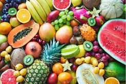

Fruits are the seed-bearing structures in flowering plants that develop from the ovary after flowering [0.6.5). In culinary terms, they are generally sweet or sour, fleshy plant foods consumed raw or cooked